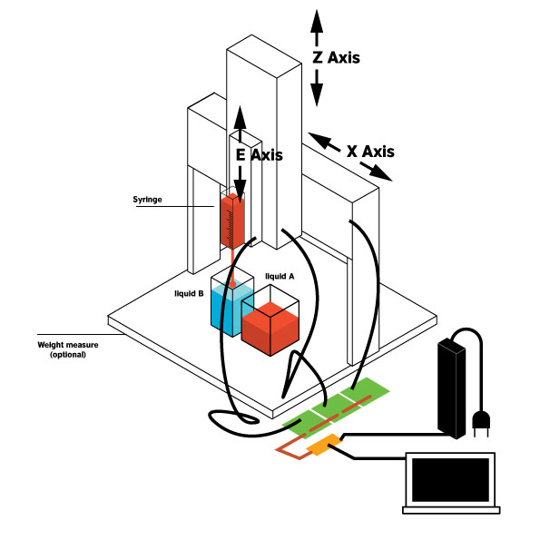
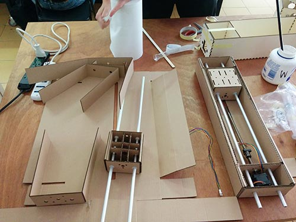

Costantino Bongiorno, Sabina Barcussi and Massimo Bianchini at WeMake FabLab decide to design a machine to pick up liquids. The Granatina Machine uses a sirynge to pick a certain quantity of liquid from a vase A and releasing it into a Vase B. In its possible future development this machine could be used to calculate in a precise way the components for molding and casting activities. Or in alternative to prepare cocktails.
All three collaborate to develop this machine. In particular:
We follow all the tutorials to use FaBnet, and develop Gestalt nodes for the three axis. Starting from the tutorials. Moreover, a first version of the machine has been prototyped laser cutting cardboard and drawing the first version of a basic GUI to command the steppers
All the axis have been firstly developed using cardboard in order to verify how work. Due to the particular structure of this machine the final three axis have been redesigned using plywood which has been cut using the laser. Finally the machine has been assembled.
We follow all the instructions from various tutorials in the Fab academy archive. We download Python, then install wxGestalt in order to control and command the gestalt nodes and moving the machine. We use the template provided by the tutorial to move the nodes in order to test the machine. The final GUI has to be implemented as follow. Nodes 1 (X axis) has been tested alone to understand how to command and move it. Finally the same procedure has been adopted for the other three axis and finally Granatina works.
I tried many times to install wxGestalt and working to the template in two directions in order to complete the task. When I tried install the WxGestalt using terminal, as suggested by the tutorial, I had a lot of problems. I analyze in dept the template to find a solution, just to move the three Axis, I decide to intervene directly on the template manually focusing on the part of the template.sketch which move and control the 3 nodes as follow:
In this way we find the temporary solution to calculate the basic movement of the steppers in order to run the machine.
# -*- coding: utf-8 -*-
#Â License: Public Domain (use it as you like!)
#Â Import main wxPython libraries
import wx
import wx.xrc
#Â Import the wxGestalt module for Gestalt Machines
import Machines.wxMachines as wxMachines
###########################################################################
## Class wxGestaltPanel
###########################################################################
class wxGestaltPanel(wx.Panel):
'''
This is the main class for the app that will be launched in the fifth tab.
Do not rename the class, or wxGestalt won't open it in the tab.
Please remember: if you print anything, it will go out to the second tab
(2. Identify the nodes). So please add a text widget and update its value
in order to show some text / values in the GUI.
'''
def __init__( self, parent ):
'''
This function initialize the interface. Add all your GUI elements here.
The self.myMachine object is the machine you initialized in the first two tabs.
Don't change it or it won't work. The self.launch_button will launch your
code, change only its position.
'''
#Â Initialize the panel that contains all the GUI elements
#Â Don't change this!
wx.Panel.__init__ ( self, parent, id = wx.ID_ANY,
pos = wx.DefaultPosition, size = wx.Size( 500,300 ),
style = wx.TAB_TRAVERSAL )
# Load the machine edited in the main app.
#Â Don't change this!
self.myMachine = self.GetParent().myMachine
#Â Create sizers for organizing the GUI elements here
self.mainSizer = wx.BoxSizer( wx.VERTICAL )
#Â ...
#Â Create GUI elements here
txt1 = "Just a text element to show you how to create GUI widgets..."
st1 = wx.StaticText(self, label=txt1, style=wx.ALIGN_CENTRE)
#Â ...
#Â Add GUI elements to the sizer here
self.mainSizer.Add(st1, flag=wx.ALL, border=5)
# ...
#Â Bind events to GUI widgets here
#Â ...
#Â Add a button for launching your app.
#Â You should only change the position of this!
self.launch_button = wx.Button( self, wx.ID_ANY, u"Run", wx.DefaultPosition, wx.DefaultSize, 0 )
self.mainSizer.Add( self.launch_button, 0, wx.ALL, 5 )
self.launch_button.Bind( wx.EVT_BUTTON, self.On_Run )
#Â Set up sizers and layout
#Â Don't change this!
self.SetSizer( self.mainSizer )
self.Layout()
def On_CalculateMoves(self):
'''
Add here the function for calculating the move instructions to be sent to the machine.
'''
#Â Add here your algorithm
#Â ...
# Store here the final moves from your algorithm
#Â The code below is just an example on how to structure the moves
#Â according to the number of nodes
if self.myMachine.nodesNumber == 1:
moves = [[10],[20],[10],[0]]
elif self.myMachine.nodesNumber == 2:
moves = [[10,10],[20,20],[10,10],[0,0]]
elif self.myMachine.nodesNumber == 3:
moves = [[0,0,0],[0,80,0],[0,80,30],[0,0,30],[110,0,30],[110,40,30],[110,30,0],[110,0,0],[0,0,0]]
elif self.myMachine.nodesNumber == 4:
moves = [[10,10,10,10],[20,20,20,20],[10,10,10,10],[0,0,0,0]]
#Â Return the value
return moves
def On_Run(self, event):
'''
This function will finally control the machine after you press the "Run" button.
Do not change this function.
'''
#Â This will calculate the moves for your machine
moves = self.On_CalculateMoves()
#Â This will send the moves to the machine
self.myMachine.moveMachine(moves)
To create a simple GUI which have 6 buttons integrating in the template the simplest solution is create two buttons for each Axis in order to manually move the stepper as follow:
I am spending a lot of time to learn ho to use Python developing very simple exercises but the level of my knowledge is too low. I tried to start from simple exercises but I need to invest more and more time to learn the basic principles of Python.